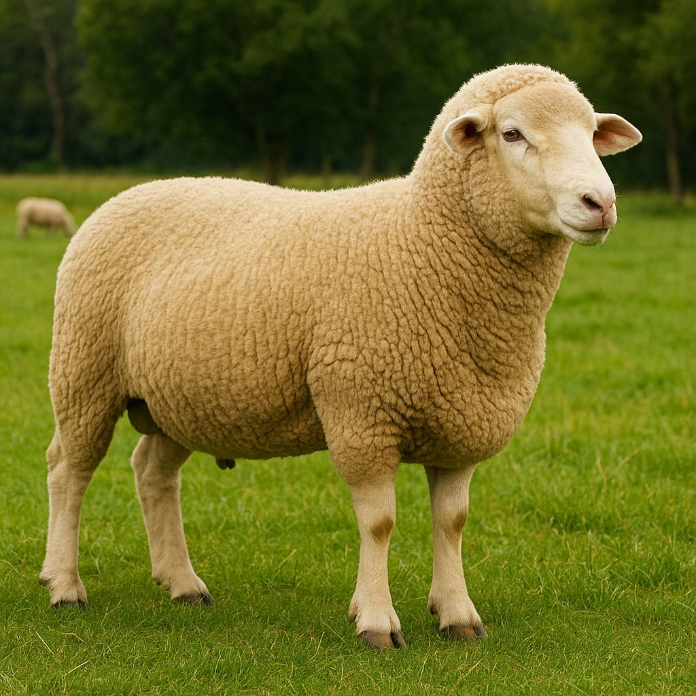
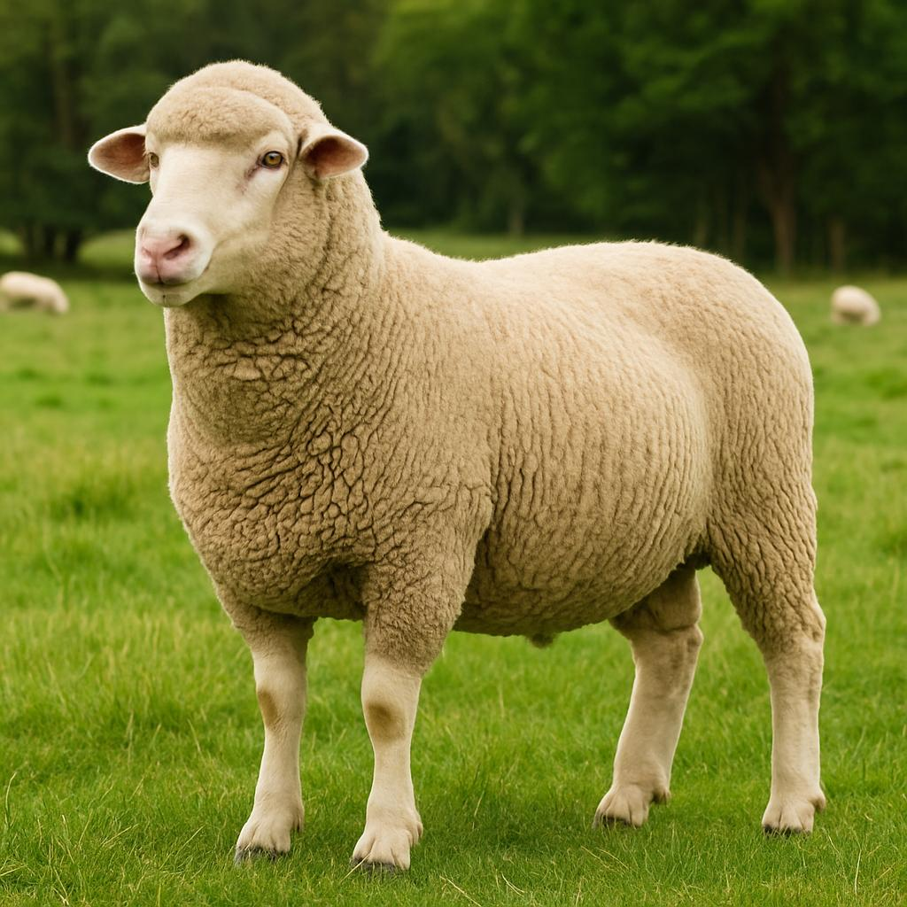
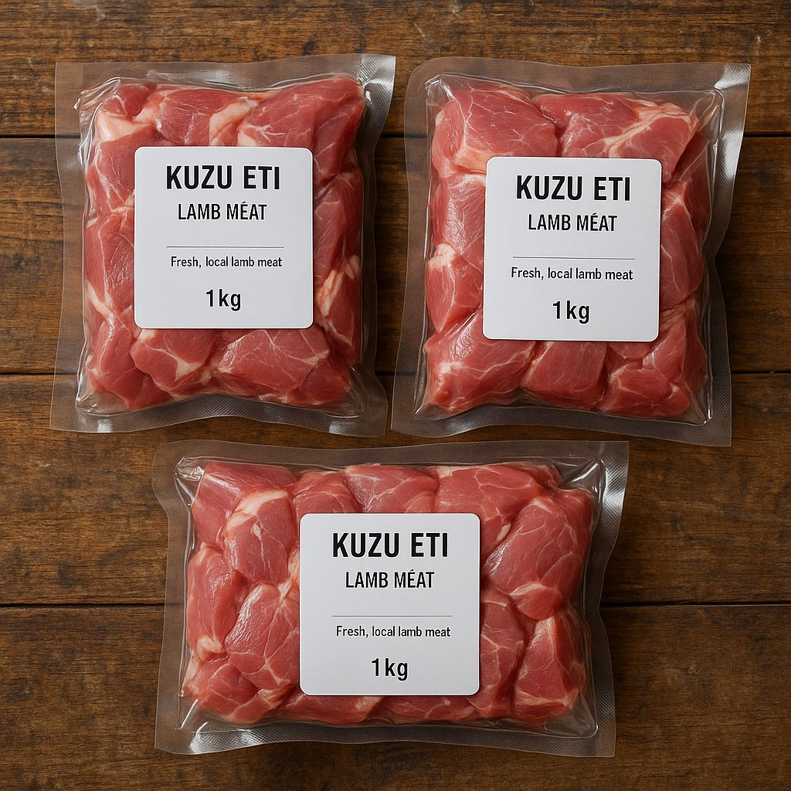

Hızlı gelişim ve yüksek et verimi sağlayan etlik ırk.
Canlı: 250 TL/kg

Verimli doğurganlık oranına sahip, kaliteli damızlık koyun.
Baş: 17.000 TL

Hijyenik koşullarda hazırlanmış 1 kg'lık vakumlu paket.
500 TL/kg
Marmara bölgesine özgüdür. Eti lezzetlidir fakat verimi düşüktür. Karacabey Merinos'a göre daha az et verimine sahiptir.
Süt verimi yüksektir ancak etlik performansı düşüktür. Genellikle süt için beslenir.
Güneydoğu Anadolu kökenlidir. Sıcağa dayanıklıdır, süt verimi iyidir ancak et kalitesi Karacabey Merinos’tan düşüktür.
Orta Anadolu'ya özgüdür. Dayanıklıdır fakat büyüme hızı düşüktür. Et verimi sınırlıdır.